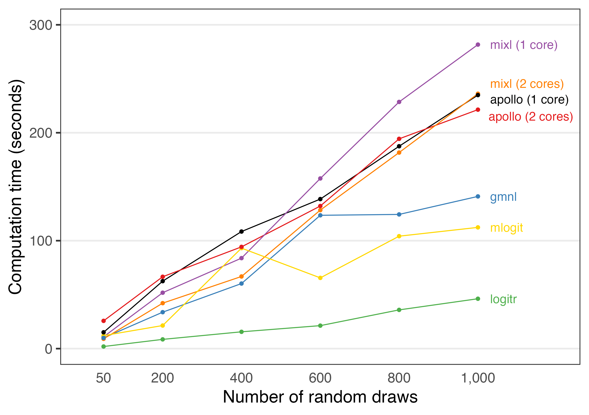

{logitr} is faster than most other packages with similar functionality. To demonstrate this, a benchmark was conducted by estimating the same preference space mixed logit model using the following R packages:
The benchmark can be viewed at this Google Colab notebook:
https://colab.research.google.com/drive/1vYlBdJd4xCV43UwJ33XXpO3Ys8xWkuxx?usp=sharing
Benchmarks will always vary for every run of a benchmarking code, even when run on the same machine due to variations in background processes. Thus, if you run this code yourself on a different machine, your results may vary, though the overall order and trends in terms of each package’s relative speed should be similar to those from the Colab notebook.
The {logitr} package includes a runtimes data frame that is exported from the Google Colab notebook used to conduct the benchmark. The tables below summarize the run times for each package and how many times slower they are relative to {logitr}.
library(logitr)
library(dplyr)
library(tidyr)
library(kableExtra) # For tables
numDraws <- unique(runtimes$numDraws)
logitr_time <- runtimes %>%
filter(package == "logitr") %>%
rename(time_logitr = time_sec)
time_compare <- runtimes %>%
left_join(select(logitr_time, -package), by = "numDraws") %>%
mutate(mult = round(time_sec/ time_logitr, 1)) %>%
select(-time_logitr)
# Compare raw times
time_compare %>%
select(-mult) %>%
pivot_wider(names_from = numDraws, values_from = time_sec) %>%
kbl()| package | 50 | 200 | 400 | 600 | 800 | 1000 |
|---|---|---|---|---|---|---|
| logitr | 2.638693 | 7.668739 | 15.32125 | 22.42868 | 37.24304 | 43.71596 |
| mixl (1 core) | 11.845851 | 50.725199 | 81.82600 | 161.36566 | 235.44202 | 276.74798 |
| mixl (2 cores) | 9.271274 | 43.303684 | 68.33331 | 133.92759 | 191.60100 | 240.32158 |
| mlogit | 11.742382 | 19.933376 | 92.93701 | 64.24316 | 104.22152 | 107.13072 |
| gmnl | 9.570415 | 28.944687 | 79.71960 | 136.50759 | 118.34980 | 138.22646 |
| apollo (1 core) | 14.851238 | 53.013370 | 96.63307 | 136.62422 | 188.45107 | 221.10611 |
| apollo (2 cores) | 24.532343 | 62.395754 | 93.34197 | 137.09962 | 188.07958 | 214.05854 |
# Compare how many times slower compared to logitr
time_compare %>%
select(-time_sec) %>%
pivot_wider(names_from = numDraws, values_from = mult) %>%
kbl()| package | 50 | 200 | 400 | 600 | 800 | 1000 |
|---|---|---|---|---|---|---|
| logitr | 1.0 | 1.0 | 1.0 | 1.0 | 1.0 | 1.0 |
| mixl (1 core) | 4.5 | 6.6 | 5.3 | 7.2 | 6.3 | 6.3 |
| mixl (2 cores) | 3.5 | 5.6 | 4.5 | 6.0 | 5.1 | 5.5 |
| mlogit | 4.5 | 2.6 | 6.1 | 2.9 | 2.8 | 2.5 |
| gmnl | 3.6 | 3.8 | 5.2 | 6.1 | 3.2 | 3.2 |
| apollo (1 core) | 5.6 | 6.9 | 6.3 | 6.1 | 5.1 | 5.1 |
| apollo (2 cores) | 9.3 | 8.1 | 6.1 | 6.1 | 5.1 | 4.9 |
The code below plots the relative run times from the Colab notebook.
library(ggplot2)
library(ggrepel)
plotColors <- c("black", RColorBrewer::brewer.pal(n = 5, name = "Set1"), "gold")
benchmark <- runtimes %>%
ggplot(aes(x = numDraws, y = time_sec, color = package)) +
geom_line() +
geom_point() +
geom_text_repel(
data = . %>% filter(numDraws == max(numDraws)),
aes(label = package),
hjust = 0, nudge_x = 40, direction = "y",
size = 4.5, segment.size = 0
) +
scale_x_continuous(
limits = c(0, 1200),
breaks = numDraws,
labels = scales::comma) +
scale_y_continuous(limits = c(0, 300), breaks = seq(0, 300, 100)) +
scale_color_manual(values = plotColors) +
guides(
point = guide_legend(override.aes = list(label = "")),
color = guide_legend(override.aes = list(label = ""))) +
theme_bw(base_size = 18) +
theme(
panel.grid.minor = element_blank(),
panel.grid.major.x = element_blank(),
legend.position = "none",
axis.line.x = element_blank(),
axis.ticks.x = element_blank()
) +
labs(
x = "Number of random draws",
y = "Computation time (seconds)"
)
benchmark